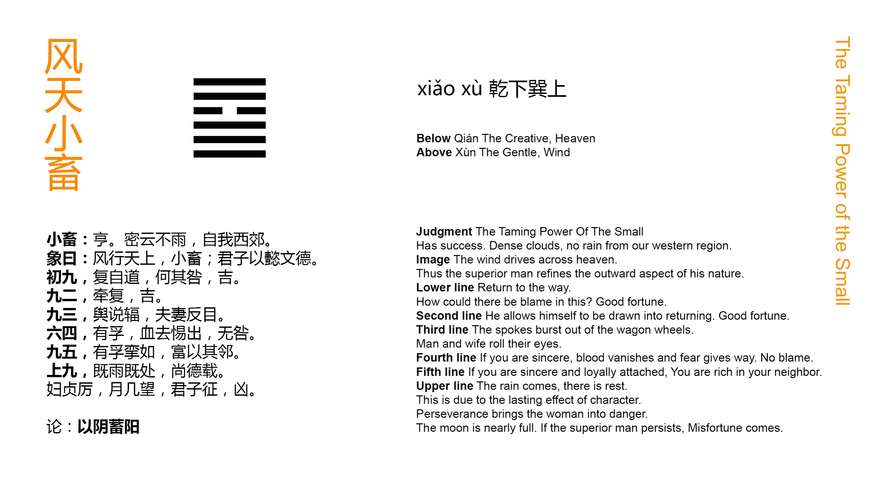

Chinese: 小畜 ䷈ xiǎo xù

Xiǎo Xù ䷈ indicates that (under its conditions) there will be progress and success. (We see) dense clouds, but no rain coming from our borders in the west.
1. The first NINE, undivided, shows its subject returning and pursuing his own course. What mistake should he fall into? There will be good fortune.
䷈ changing to ䷸
Matching Line 1 in Adjacent Hexagram: ䷉
2. The second NINE, undivided, shows its subject, by the attraction (of the former line), returning (to the proper course). There will be good fortune.
䷈ changing to ䷤
Matching Line 2 in Adjacent Hexagram: ䷉
3. The third NINE, undivided, suggests the idea of a carriage, the strap beneath which has been removed, or of a husband and wife looking on each other with averted eyes.
䷈ changing to ䷼
Matching Line 3 in Adjacent Hexagram: ䷉
4. The fourth SIX, divided, shows its subject possessed of sincerity. The danger of bloodshed is thereby averted, and his (ground for) apprehension dismissed. There will be no mistake.
䷈ changing to ䷀
Matching Line 4 in Adjacent Hexagram: ䷉
5. The fifth NINE, undivided, shows its subject possessed of sincerity, and drawing others to unite with him. Rich in resources, he employs his neighbours (in the same cause with himself).
䷈ changing to ䷙
Matching Line 5 in Adjacent Hexagram: ䷉
6. The topmost NINE, undivided, shows how the rain has fallen, and the (onward progress) is stayed; -- (so) must we value the full accumulation of the virtue (represented by the upper trigram). But a wife (exercising restraint), however firm and correct she may be, is in a position of peril, (and like) the moon approaching to the full. If the superior man prosecute his measures (in such circumstances), there will be evil.
䷈ changing to ䷄
Matching Line 6 in Adjacent Hexagram: ䷉
The name Xiǎo Xù ䷈ is interpreted as meaning 'small restraint.' The idea of 'restraint' having once been determined on as that to be conveyed by the figure, it is easily made out that the restraint must be small, for its representative is the divided line in the fourth place; and the check given by that to all the undivided lines cannot be great. Even if we suppose, as many critics do, that all the virtue of that upper trigram Xùn ☴ is concentrated in its first line, the attribute ascribed to Xùn ☴ is that of docile flexibility, which cannot long be successful against the strength emblemed by the lower trigram Qián ☰. The restraint therefore is small, and in the end there will be 'progress and success.'
The second sentence of the Tuàn contains indications of the place, time, and personality of the writer which it seems possible to ascertain. The fief of Zhōu was the western portion of the p. 78 kingdom of Yīn or Shāng, the China of the twelfth century B. C., the era of king Wén. Rain coming and moistening the ground is the cause of the beauty and luxuriance of the vegetable world, and the emblem of the blessings flowing from good training and good government. Here therefore in the west, the hereditary territory of the house of Zhōu, are blessings which might enrich the whole kingdom; but they are somehow restrained. The dense clouds do not empty their stores.
P. Regis says: -- 'To declare openly that no rain fell from the heavens long covered with dense clouds over the great tract of country, which stretched from the western border to the court and on to the eastern sea, was nothing else but leaving it to all thoughtful minds to draw the conclusion that the family of Wén was as worthy of the supreme seat as that of Shào, the tyrant, however ancient, was unworthy of it (vol. I, p. 356).' The intimation is not put in the Text, however, so clearly as by P. Regis.
Line 1 is undivided, the first line of Qián ☰, occupying its proper place. Its subject, therefore, notwithstanding the check of line 4, resumes his movement, and will act according to his strong nature, and go forward.
Line 2 is also strong, and though an even place is not appropriate to it, that place being central, its subject will make common cause with the subject of line 1; and there will be good fortune.
Line 3, though strong, and in a proper place, yet not being in the centre, is supposed to be less able to resist the restraint of line 4; and hence it has the ill omens that are given.
The subject of line 4, one weak line against all the strong lines of the hexagram, might well expect wounds, and feel apprehension in trying to restrain the others; but it is in its proper place; it is the first line also of Xùn ☴, whose attribute is docile flexibility. p. 79 The strong lines are moved to sympathy and help, and 'there is no mistake.'
Line 5 occupies the central place of Xùn ☴, and converts, by the sincerity, of its subject, 4 and 6 into its neighbours, who suffer themselves to be used by it, and effect their common object.
In line 6, the idea of the hexagram has run its course. The harmony of nature is restored. The rain falls, and the onward march of the strong lines should now stop. But weakness that has achieved such a result, if it plume itself on it, will be in a position of peril; and like the full moon, which must henceforth wane. Let the superior man, when he has attained his end, remain in quiet.